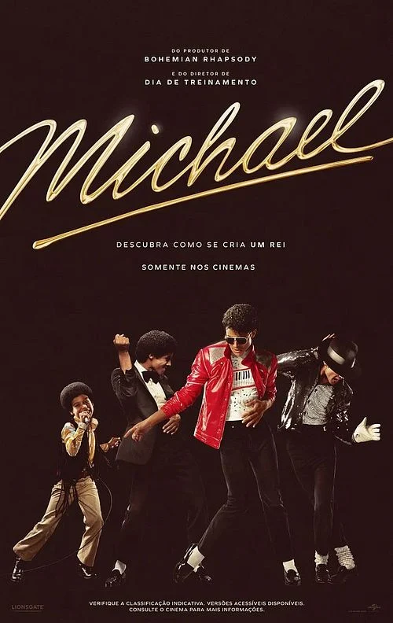

Ficha do filme
Michael
Sinopse
A trajetória de Michael Jackson ganha vida em uma cinebiografia que acompanha sua ascensão, o processo criativo e os desafios por trás de algumas das performances mais marcantes da música.

Ficha do filme
A trajetória de Michael Jackson ganha vida em uma cinebiografia que acompanha sua ascensão, o processo criativo e os desafios por trás de algumas das performances mais marcantes da música.